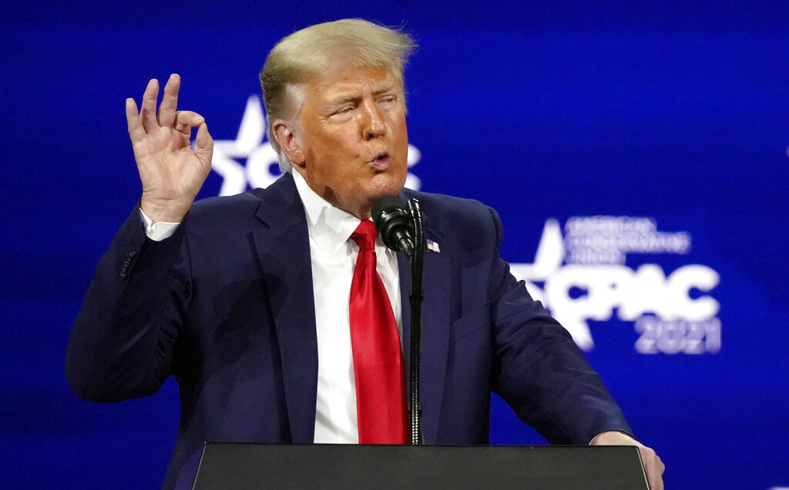
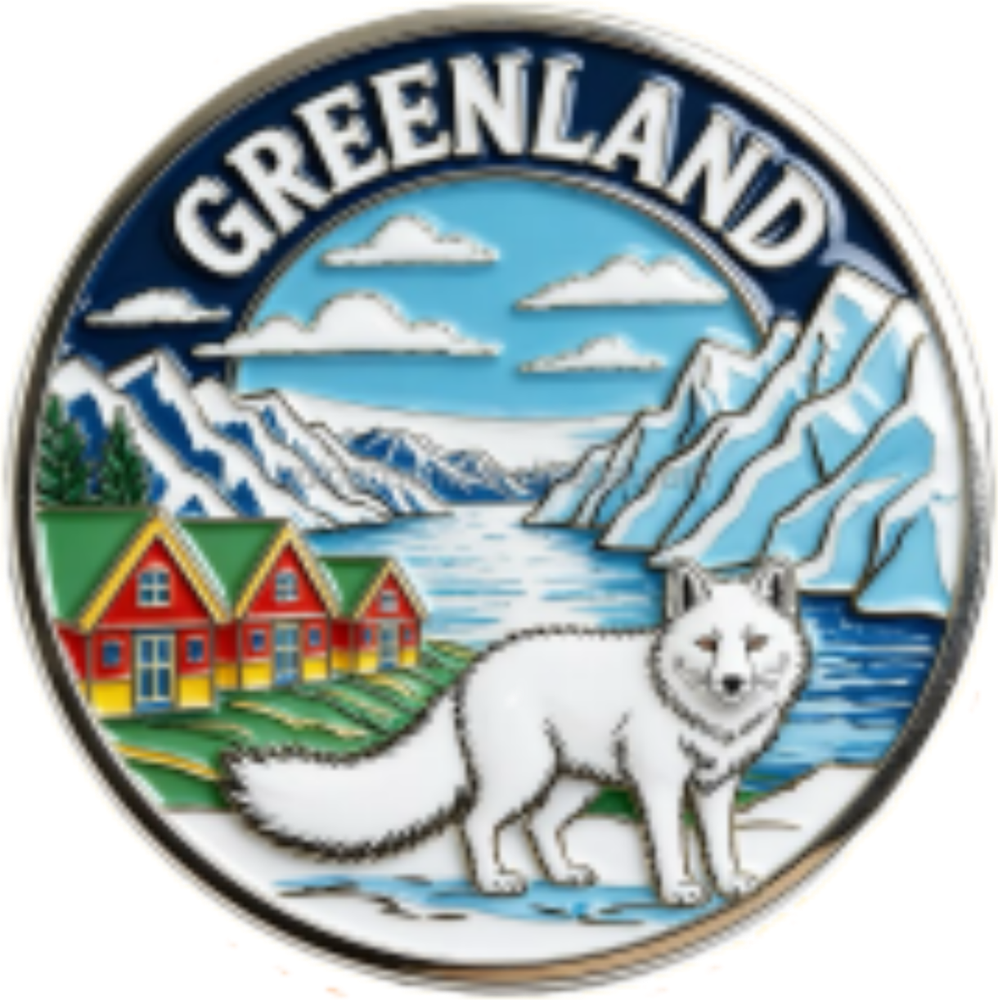

Trumpova agrese vůči Grónsku


V průběhu letošního roku se vztahy mezi Spojenými státy a Grónskem, autonomní částí Dánského království, proměnily ve vážnou diplomatickou krizi, která se postupem času začínala zdát stále vážnější. Zatímco prezident Donald Trump popírá, že by chtěl použít vojenskou sílu, jeho opakované kroky a výroky kolem Grónska vyvolaly ostré reakce v Kodani i v hlavním městě Grónska, Nuuku.
Trumpův zájem o Grónsko, strategicky významný ostrov v Arktidě s bohatými nerostnými zásobami a klíčovou polohou mezi Evropou a Severní Amerikou, vedl k sérii napjatých momentů mezi USA a zástupci evropských států, zejména Dánska. Trump sice formálně vyloučil použití vojenské síly při jednání o budoucnosti území, přesto však podle grónského premiéra JensFrederika Nielsena Washington stále „fundamentálně usiluje o kontrolu“ ostrova. Trump se dokonce pokusil Grónsko i koupit, avšak neúspěšně. Z Dánska mu bylo vzkázáno, že Grónsko není, ani nebude na prodej.
Napětí se vyostřilo i poté, co Trump na své sociální síti oznámil, že plánuje poslat americkou nemocniční loď do Grónska v rámci „pomoci“ místní populaci. Grónský premiér tuto "nabídku" odmítl s poznámkou, že Grónsko má veřejný zdravotní systém s bezplatnou péčí, a vyzval Washington, aby usiloval o obostrannou domluvu, namísto jednostranných oznámení. Následovaly diplomatické snahy zmírnit konflikt. V lednu se uskutečnily technická jednání mezi USA, Grónskem a Dánskem, která měla za cíl řešit americké obavy o bezpečnost v Arktidě, aniž by byla ohrožena suverenita Grónska.
Krize také podnítila širší reakce mezi evropskými spojenci. NATO spustilo misi „Arctic Sentry“, která má posílit přítomnost aliance v arktickém prostoru jako reakci na napětí vyvolané Trumpovým tlakem. Do této mise se zapojují i další státy, například Švédsko, které vysílá stíhačky a jednotky pro společné cvičení.
Mezinárodní reakce se neomezuje jen na vojenské aspekty: Francie a Kanada otevřely nové konzuláty v Nuuku. Tento krok, byť není nějak drastický, symbolizuje neustálou přítomnost a kontrolu evropských států na tomto území. Celkově tato kauza ukazuje, jak může prostý nátlak na získání území, přestrojený za řešení bezpečnostní otázky, rozdmýchat nové politické neshody a otestovat spojenectví a suverenitu evropských států. V posledních týdnech, Trumpův zjevný zájem o toto arktické území, utichl a není tak intenzivní jako začátkem roku. Nesmíme si však myslet, že by toto byl definitivní konec.
Článek zpracoval: Lukáš Kobr
Březen 2026ZDROJE